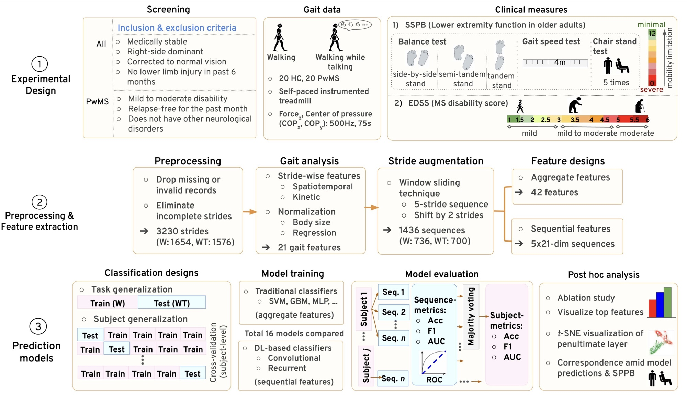
Abstract
Objective: Multiple sclerosis (MS) is a chronic neurological condition of the central nervous system leading to various physical, mental and psychiatric complexities. Mobility limitations are amongst the most frequent and early markers of MS. We evaluated the effectiveness of a DeepMS2G (deep learning (DL) for MS differentiation using multi-stride dynamics in gait) framework, which is a DL-based methodology to classify multi-stride sequences of persons with MS (PwMS) from healthy controls (HC), in order to generalize over newer walking tasks and subjects. Methods: We collected single-task Walking and dual-task Walking-while-Talking gait data using an instrumented treadmill from a balanced collection of 20 HC and 20 PwMS. We utilized domain knowledge-based spatiotemporal and kinetic gait features along with two normalization schemes, namely standard size-based and multiple regression normalization strategies. To differentiate between multi-stride sequences of HC and PwMS, we compared 16 traditional machine learning and DL algorithms. Further, we studied the interpretability of our highest-performing models; and discussed the association between the lower extremity function of participants and our model predictions. Results: We observed that residual neural network (ResNet) based models with regression-based normalization were the top performers across both task and subject generalization classification designs. Considering regression-based normalization, a multi-scale ResNet attained a subject classification accuracy and F1-score of 1.0 when generalizing from single-task Walking to dual-task Walking-while-Talking; and a ResNet resulted in the top subject-wise accuracy and F1 of 0.83 and 0.81 (resp.), when generalizing over unseen participants. Conclusion: We used advanced DL and dynamics across domain knowledge-based spatiotemporal and kinetic gait parameters to successfully classify MS gait across distinct walking trials and unseen participants. Significance: Our proposed DL algorithms might contribute to efforts to automate MS diagnoses.
Core contributions
- 1Deep learning on multiple stridesDeepMS2G classifies short sequences of five consecutive strides, capturing how gait varies from stride to stride rather than looking at one stride at a time.
- 2Rich gait features21 spatiotemporal and kinetic features per stride from an instrumented treadmill, including forces and centre-of-pressure (butterfly diagram) measures.
- 316 models benchmarkedNine traditional classifiers and seven deep-learning models, compared on a new walking task and on new people, with two normalization strategies.
- 4Explainable modelsAblations, permutation feature importance and t-SNE views of the network show what drives its decisions, and predictions are compared with physical performance (SPPB).
- 5Beyond single stridesDeep learning on multi-stride sequences outperformed our earlier single-stride machine-learning approach in both evaluation settings.
- 6Open sourceThe full workflow is available on GitHub.
Method
1Study design
We recruited 20 people with MS (mild to moderate disability, EDSS 1–6) and 20 matched healthy controls. Each person walked at their own pace on an instrumented treadmill with a built-in force plate for 75 seconds, both normally (W) and while reciting alternate letters of the alphabet (WT). The treadmill recorded gait events, ground reaction forces and the centre of pressure at 500 Hz. After excluding five people who held the handrails, 35 people remained (18 healthy, 17 with MS).
2Gait features
We extracted 21 features per stride: 4 spatial (stride width, stride length and foot progression angles), 7 temporal (stride, stance, swing and support times, and cadence), 2 spatiotemporal (stride speed and walk ratio) and 8 kinetic (forces at six gait events and two butterfly-diagram measures). In all, we kept 1,654 strides from normal walking and 1,576 from walking while talking.
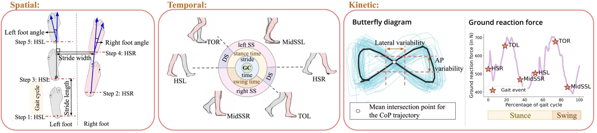
3Normalization
To reduce the effect of body size and demographics, we compared size-N, which scales each feature by body size, with regress-N, which uses regression models fit on a separate group of 30 healthy older adults (3,923 strides) to remove the effect of age, weight, height and gender.
4Multi-stride sequences
We slid a window of five consecutive strides along each walk, moving two strides at a time, giving 736 sequences from normal walking and 700 from walking while talking. Each sequence was used in two forms: a 5 × 21 sequence for deep-learning models, and 42 summary features (mean and standard deviation of each feature) for traditional classifiers.
5Prediction models
We compared 16 models: nine traditional classifiers (logistic regression, linear and RBF support vector machines, decision tree, random forest, AdaBoost, XGBoost, gradient boosting and a multilayer perceptron) and seven deep-learning models, four convolutional (1D CNN, ResNet, multi-scale ResNet, temporal convolutional network) and three recurrent (RNN, LSTM, GRU), in two settings:
- Task generalization: train on normal walking, test on walking while talking.
- Subject generalization: test on people the model has never seen (5-fold cross-validation).
We classify each sequence, then a majority vote over a person’s sequences gives their prediction. Every model was run on both size-N and regress-N features.
Show the deep-learning architectures (paper Figs. 3–5)
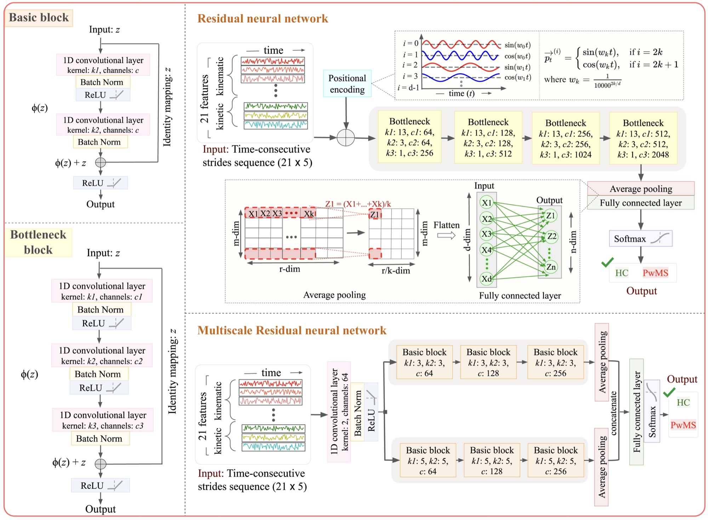
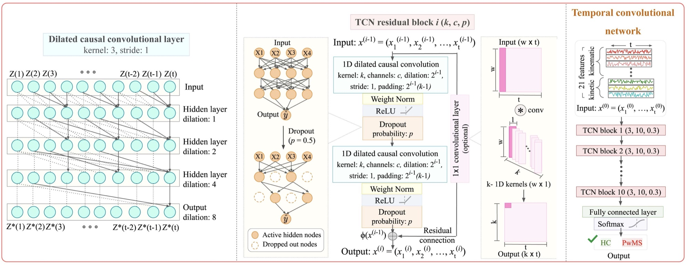
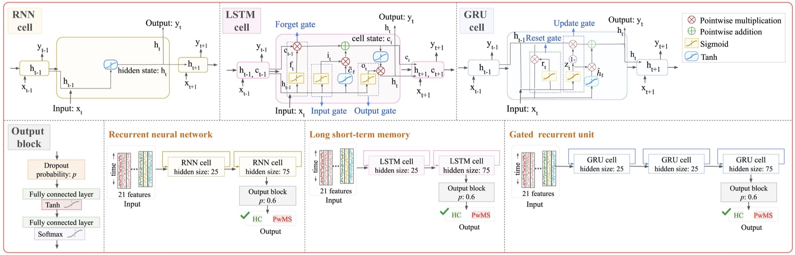
Results
1How MS changes gait
People with MS walked with a wider stance and shorter strides, lower cadence and speed, shorter single support, and longer double-support, stance and stride times. Still, the average gait patterns of the two groups overlap heavily and no single feature separated them, which is why we turned to learning from many features and strides at once.
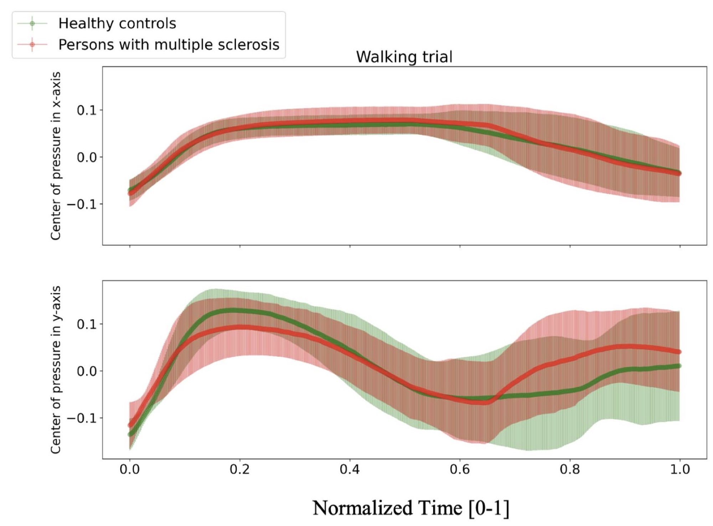
2Predicting MS
- ResNet-based models with regress-N were the top performers in both settings.
- A new walking task was handled perfectly: the multi-scale ResNet classified every person correctly (accuracy and F1 of 1.0) on walking while talking, with 91.7% accuracy on individual sequences.
- New people are harder: a ResNet reached 82.9% accuracy (F1 0.81, AUC 0.81) on people it had never seen.
- Regression-based normalization helps, and voting across a person’s sequences beats single sequences, for example from 82.3% to 88.6% for the multi-scale ResNet.
Best model in each setting, at the level of individual people (healthy vs. MS), with regress-N features:
| Setting | Best model | Accuracy | F1 | AUC |
|---|---|---|---|---|
| Task generalizationtrain on walking, test on walking while talking | Multi-scale ResNet | 100% | 1.00 | 1.00 |
| Subject generalizationnew people | ResNet | 82.9% | 0.81 | 0.81 |
Show full results (paper Tables II–III): top three machine-learning and deep-learning models, sequence- and person-level
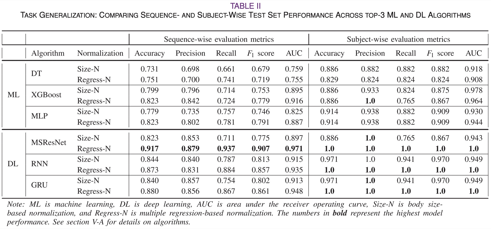
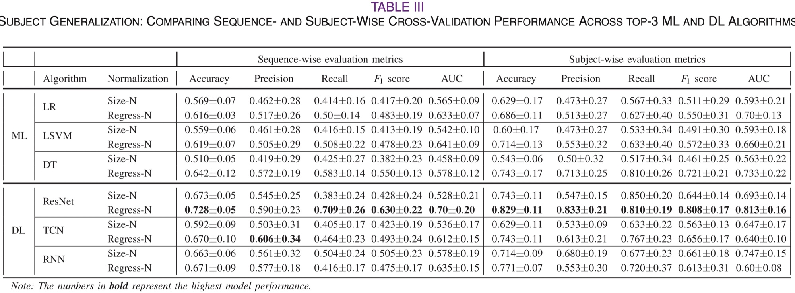
Analysis
1Which features matter?
We retrained the models on subsets of features and shuffled one feature at a time to see how much the best models relied on it.
- All 21 features together work best in both settings; spatiotemporal features alone came closest.
- Different features matter for different tests: force at mid-stance, single-support time and foot angle for a new walking task; stride time, sideways shift in the centre of pressure and stride length for new people.
Show the ablation study (paper Table IV)
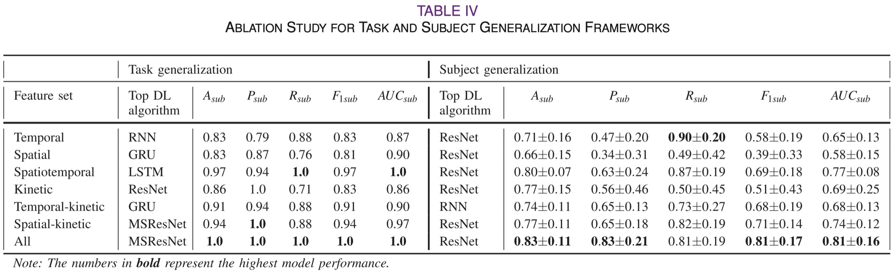
2Inside the model
We looked at what the networks learned, and whether their mistakes relate to how physically fit people are, using the Short Physical Performance Battery (SPPB, 0–12, where higher means less frail).
- The network separates the two groups on its own: its internal features form one cluster for healthy controls and one for MS, with a progression from mild to moderate MS.
- Fitter people with MS are harder to spot: those with high SPPB scores were more often mistaken for healthy, though the link was not statistically significant.
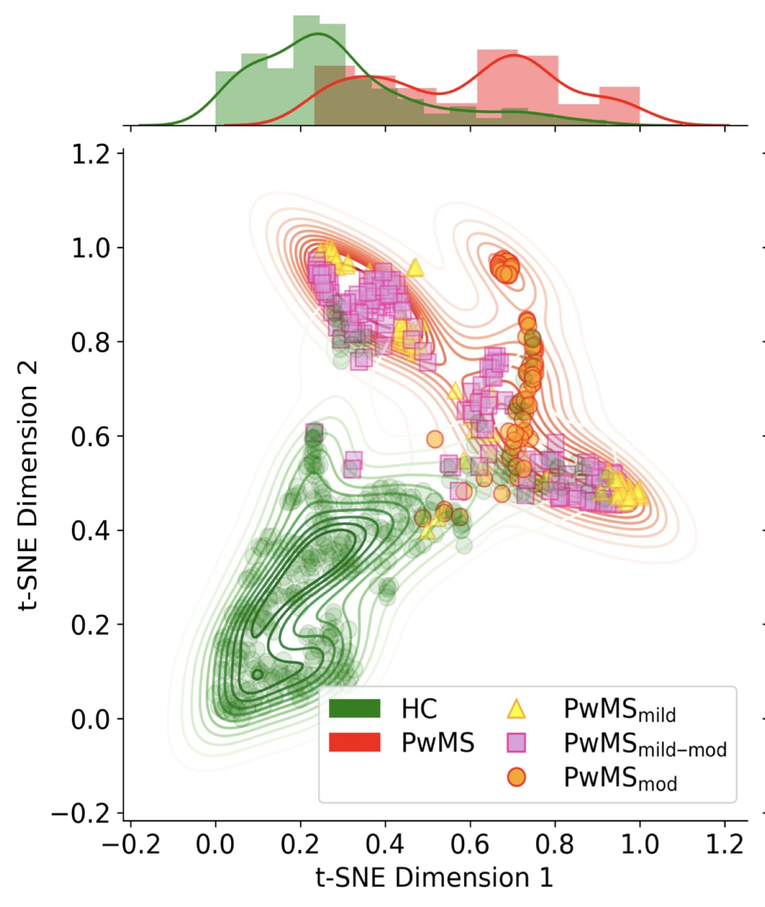
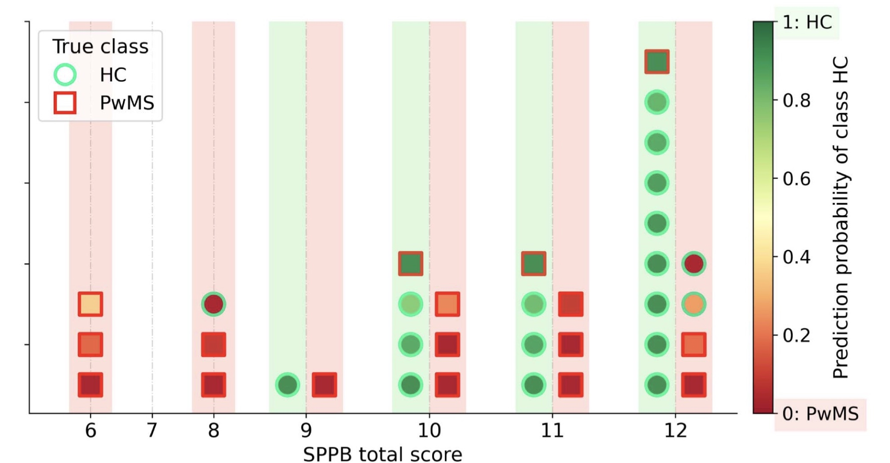
BibTeX
@article{kaur2023deep,
title = {Deep Learning for Multiple Sclerosis Differentiation Using
Multi-Stride Dynamics in Gait},
author = {Kaur, Rachneet and Levy, Joshua and Motl, Robert W and
Sowers, Richard and Hernandez, Manuel E},
journal = {IEEE Transactions on Biomedical Engineering},
volume = {70},
number = {7},
pages = {2181--2192},
year = {2023},
doi = {10.1109/TBME.2023.3238680}
}